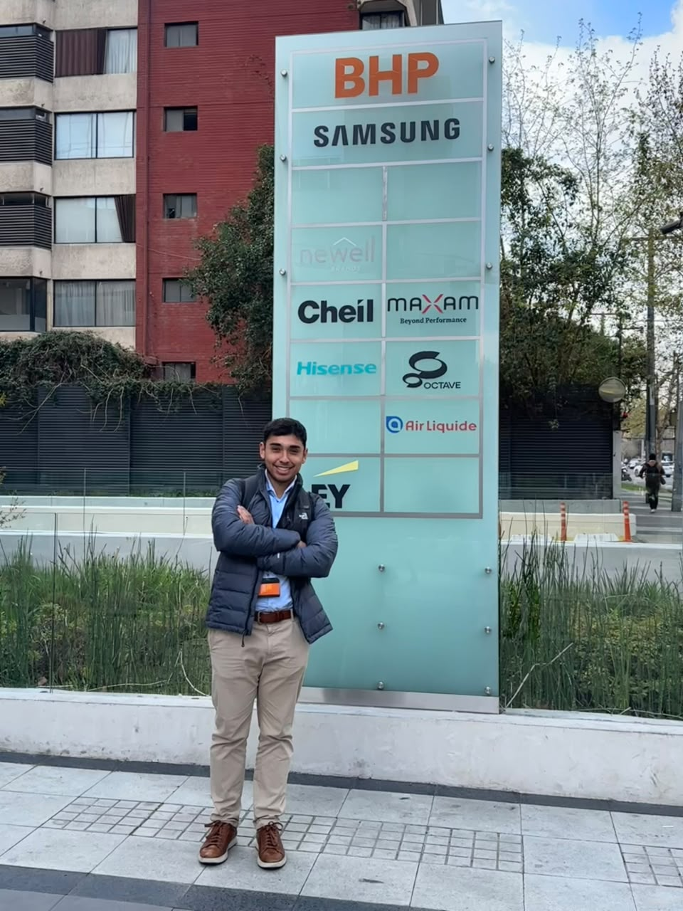

Tus clientes están pidiendo más. ¿Tu equipo tiene capacidad para responder sin sobrecargarse?
Durante mi experiencia profesional, he visto que algunas empresas tienen conocimiento, clientes y oportunidades para crecer, pero su propia capacidad operativa comienza a convertirse en un límite.
- Mientras tanto, sus competidores pueden avanzar más rápido, incorporan nuevas tecnologías y ofrecen servicios que antes no eran posibles.
Creo que todo el conocimiento, esfuerzo y progreso que una empresa ha construido durante años debería servirle para seguir creciendo, no quedarse atrás porque su forma de trabajar dejó de evolucionar.
Este problema lo conocí desde dentro.
Lo viví trabajando en una consultora especializada en inteligencia de negocio para la minería, donde uno de sus principales activos era la información y el conocimiento acumulado durante años.
La empresa tenía profesionales muy capaces y oportunidades para seguir creciendo, pero también enfrentaba algunas dificultades:
- Analistas con poco tiempo para asumir nuevos proyectos.
- Tareas manuales y repetitivas.
- Información distribuida en distintas fuentes.
- Horas dedicadas a recopilar y preparar datos antes de analizarlos.
Todo esto hacía más difícil ampliar los análisis, incorporar nuevas fuentes, cumplir con las entregas y responder a nuevas necesidades de los clientes.
Antes de construir, había que entender.
Herramientas como la IA podían ayudar, pero por sí solas no resolvían el problema.
Primero tuve que aprender cómo funcionaba el negocio, conversar con los analistas y entender cómo trabajaban, qué información necesitaban y dónde se perdían horas.
Y algo igual de importante: no todas las oportunidades de mejora tenían el mismo impacto.
Había que priorizar aquellas que realmente podían mejorar los tiempos de entrega, la calidad del trabajo o la capacidad del equipo para asumir nuevos desafíos.
A partir de ahí empecé a:
- Automatizar procesos de extracción y tratamiento de información.
- Incorporar nuevas fuentes de datos.
- Centralizar información que antes estaba distribuida.
- Transformar tareas repetitivas en procesos reutilizables.
- Explorar nuevas capacidades para productos que ya existían.
El resultado fue mucho más que ahorrar tiempo.
Si bien se logró liberar más de 50 horas de trabajo acumulado al mes y reducir los tiempos de entrega de informes.
Los analistas también podían dedicar más tiempo al análisis y acceder a información que antes no estaba disponible.
Pero lo más importante fue que el equipo ganó capacidad para responder a nuevas necesidades y abordar trabajos que antes requerían demasiadas horas y recursos.
El problema no era que faltaran personas capaces.
La empresa simplemente había crecido más rápido que algunos de sus procesos.
Y entendí que muchas veces no se trata de incorporar más personas o nuevas herramientas, sino de aprovechar mejor los recursos que ya existen.
No siempre la mejor solución es la más tecnológica.
Trabajar con datos en la industria minera me ha enseñado que detrás de cada solución hay procesos, reglas de negocio y personas con conocimiento que no siempre aparece en los datos.
Por eso me gusta involucrarme y escuchar a quienes hacen el trabajo todos los días. Ellos conocen sus dificultades y pueden ayudar a identificar qué vale la pena mejorar.
No se trata de llegar con una solución definida, sino de construirla en conjunto y adaptarla hasta que funcione para el equipo.
Por eso también me importa explicar lo que construyo, compartir el conocimiento y dejar herramientas que el equipo pueda seguir utilizando y mejorando.
Mi objetivo no es implementar tecnología por implementar. Es encontrar dónde realmente puede generar valor y hacer que esa mejora perdure.
Hoy sigo recorriendo ese camino.
Actualmente trabajo como Data Analyst en BHP, donde sigo aprendiendo y profundizando mi experiencia en datos, análisis y construcción de soluciones de información.
Y sigo llegando a la misma conclusión: una empresa no siempre necesita más recursos; muchas veces necesita aprovechar mejor los que ya tiene.

¿Cómo puedo ayudarte?
Trabajo especialmente con consultoras y empresas intensivas en información que buscan ampliar su capacidad de trabajo y mejorar lo que entregan a sus clientes.
Mi experiencia viene de la minería, pero este tipo de desafío también existe en otras industrias.
No parto desde una tecnología. Parto desde el problema.
-
Entender
Primero conocemos el negocio y cómo trabaja el equipo. Identificamos las dificultades y priorizamos juntos las oportunidades con mayor potencial de impacto en los resultados.
-
Construir
Desarrollamos una solución adaptada al problema: automatizaciones, integración de información, bases de datos, pipelines, análisis o IA cuando realmente tenga sentido. Siempre trabajando junto a quienes la utilizarán.
-
Transferir o continuar
Podemos documentar la solución, explicar su funcionamiento y preparar al equipo para gestionarla internamente.
O podemos seguir trabajando juntos, evaluando nuevas oportunidades, desarrollando mejoras, asesorando al equipo o dando soporte a lo construido.
Conversemos.
No dejes seguir pasando oportunidades. Si algo de esta historia se parece a lo que está pasando en tu empresa, conversemos.
No necesitas tener clara la solución, empecemos por algo sencillo: un café virtual de 15 minutos para descubrir oportunidades.